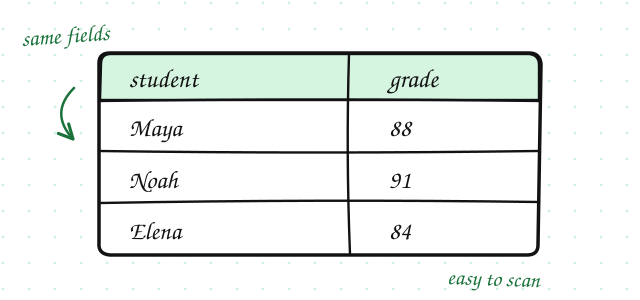
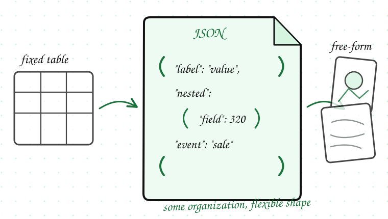
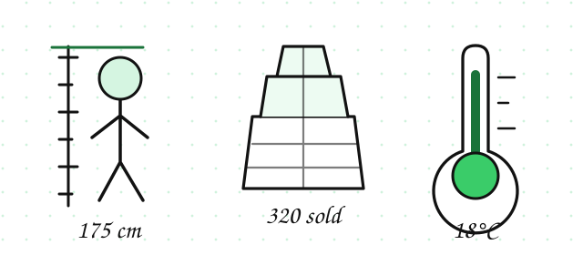

A shop owner opens a spreadsheet of last week's sales and sees numbers, product names, and customer comments all mixed together. Some entries fit neatly in columns; others are long notes in a single cell.
Before choosing how to analyze this, you need to know what type of data you are looking at.
Structured data is organized in a clear, predictable format. It usually fits neatly into rows and columns, like a table.

Unstructured data does not follow a fixed format. It is harder to organize automatically.
Semi-structured data sits between the two. It has some organization, but not a fixed table layout. JSON is a common example. It uses labels and nested fields, which makes it useful for apps and APIs but less rigid than a database table.

Most real-world projects use a mix of all three. A company might store order details in a structured database, customer reviews as unstructured text, and app event logs as semi-structured JSON.
Quantitative data can be counted or measured with numbers.

Qualitative data describes qualities or categories. It often comes in words or labels.
Labels like product color or satisfaction level are often called categorical data. They group items into categories rather than measure them with numbers.
Knowing the type of data helps you answer questions like:
For example, you can average quantitative sales numbers, but you cannot average qualitative comments like “good” and “excellent” in a meaningful way without extra processing.